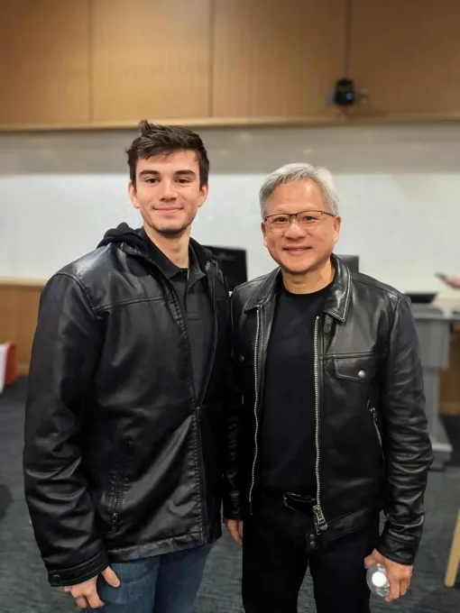

Education
University of Florida — Ph.D., Electrical & Computer Engineering (expected 2030)
University of Florida — B.S., Electrical & Computer Engineering (2020–2025)
Doral Academy Charter School — STEM diploma (2013–2020)

I am a Ph.D. student in Electrical and Computer Engineering at the University of Florida. My current research in the SmartDATA Lab builds machine-learning surrogate models for computational fluid dynamics — fast learned stand-ins for expensive physics solvers that are audited against the physics they approximate. That work sits on a foundation of signal processing, time-series machine learning, and neuroengineering built in the Computational NeuroEngineering Lab.
The work that matters most to me sits at the intersection of physical modeling, signals and systems, and machine learning. I care about models that remain interpretable under noise, limited data, and real deployment constraints instead of only looking good in idealized benchmarks.
University of Florida — Ph.D., Electrical & Computer Engineering (expected 2030)
University of Florida — B.S., Electrical & Computer Engineering (2020–2025)
Doral Academy Charter School — STEM diploma (2013–2020)
My current work is connected to UF ECE, the SmartDATA Lab, and the Computational NeuroEngineering Lab. I am the 2026–2027 president of the IEEE Signal Processing Society student chapter at UF, where I built the chapter's workshop curriculum and maintain its website.
I favor problems where modeling assumptions, signal quality, and system design all interact. In practice that means thinking about the data collection stack, the mathematics, and the evaluation pipeline together rather than pretending they are separate tasks.
That mindset carries into teaching and community work too. If a concept cannot survive being explained clearly, tested, and reused by someone else, the pipeline is probably not rigorous enough yet.
memento mori
My taste is all over the place, but these are the artists I always come back to.
I am also pretty into raving. The atmosphere is the point, and as a Miami native the scene has always been right there.
Just lifting at the moment. I am not training for anything specific, just functional strength.
Related: Ora, the training app for lifters I co-founded.
I shoot on a Sony Alpha 6700, mostly friends, nights out, and whatever the light is doing.
I also wrote a local-first photo-culling suite for my own shoots. The results live in the photography archive.
There is an easter egg on this page. ↑ ↑ ↓ ↓ ← → ← → B A (on a phone, tap the motto three times).
These days I work almost entirely out of the Codex app and a terminal.
A few times I ended up on the other side of a camera, plus a few frames from mine.
GatorHack, 1st place. UF AI Days, 2025. The full shot has Albert and Alberta in it too.
HiPerGator Early Career Award. University of Florida, 2025. String lights, folders, and an evening reception.
Sandevistan. Time moves slow.
untitled1. The lights glimmering was a cool effect, haven't been able to recreate this intentionally.
People whose corners of the internet are worth a visit.
Freelance full-stack developer.
Building AI systems people can inspect and trust.
Short reflections, paper notes, and research journal entries connected to signal processing, machine learning, and neuroengineering.
Selected recognitions tied to research, hackathons, computing, and public-facing project work.
A small personal portfolio: live music, portraits, and the occasional experiment with light.